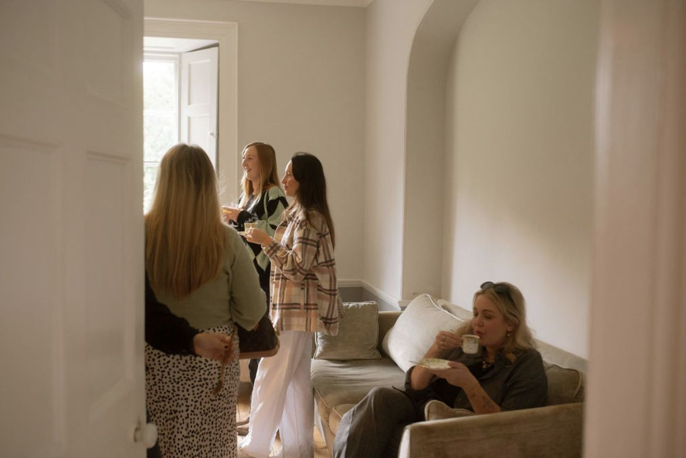

Wedding & event coordination · Cornwall & beyond
Your story.
Expertly woven.
Calm, personal coordination for couples who want to be fully present on their day.
Enquire nowTap the seal to open
Wedding & event coordination · Cornwall & beyond
Calm, personal coordination for couples who want to be fully present on their day.
Enquire nowThe WOVEN way
A wedding shouldn't be something you perform or manage. I get to know you properly, your why, what matters, who you are, and build your day from that, not from templates or trends. Then I carry every detail, so you can let go and simply be in it.
Intimacy · Presence · Authenticity · Connection

Meet Zoë
I started at a wedding venue in 2019 as a kitchen assistant and never left. I was fascinated by how weddings bring people together: friends, family and strangers becoming a community for one day.
Moving front of house taught me to read people, their needs, their worries, what would make them feel held. Today I bring that same quiet attention to every couple I work with, alongside the organisation that lets you trust me completely.
Get to know ZoëServices

£650 + travel
For couples who've planned it all and are ready to hand it over. I step in six weeks before and run the day itself.
Learn more
£950 + travel
The final twelve weeks taken care of, a venue walk-round together, and the whole day from set-up to pack-down.
Learn more
From £1,500 + travel
Someone in your corner from the start: planning, suppliers, budget and design, then the day itself.
Learn moreAlso available: The Sounding Board, a one-hour planning call, and The Finishing Touch, on-the-day styling. I also create social content for brands.
Moments


Questions
Yes. I'm based in Cornwall and happy to travel. Travel is added to your quote depending on where your celebration is.
We start with a free 30-minute call to hear your plans. I'll send a tailored proposal and quote within 3–5 days, and a signed agreement with a 50% deposit secures your date. The balance is paid after your event.
If you've planned everything and want to hand it over, The Day, Held or The Full Day, Held are made for you. If you'd like someone alongside you from the start, Woven Together is the one. Not sure? That's exactly what our first call is for.
A small number each season, so every couple gets my full attention.
Yes. Alongside weddings I create social content for wellness and lifestyle brands, entrepreneurs and small businesses. You'll find the details on the services page.